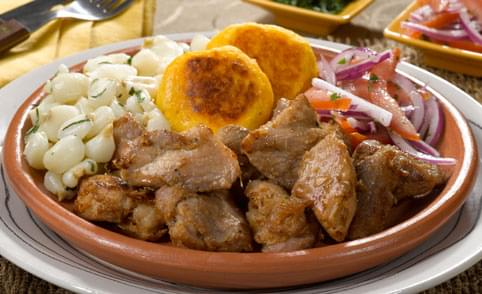

Fritada

Description
Fritada de chancho or Ecuadorian pork fritada is a popular weekend dish in Ecuador, in this traditional recipe the pork is cooked in a mix of water, orange juice with onion, garlic and cumin until the liquid is gone and the pork browns in the “mapahuira” or mix of its own grease and spices/flavors from the onion/garlic.
Ingredients
- 3-4 lbs of pork
- 1 tsp of cumin
- 10 garlic gloves
- 1 white onion
Steps
- Season the pork with the cumin, minced garlic, salt and pepper.
- In a large wok or a sauté pan add the meat, the chopped onion and shallot, the whole garlic cloves and the 3 cups of water.
- Cook on medium heat until the water is almost gone.